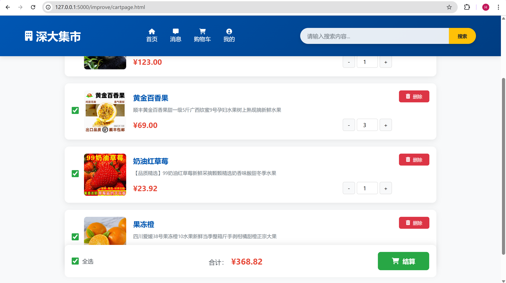
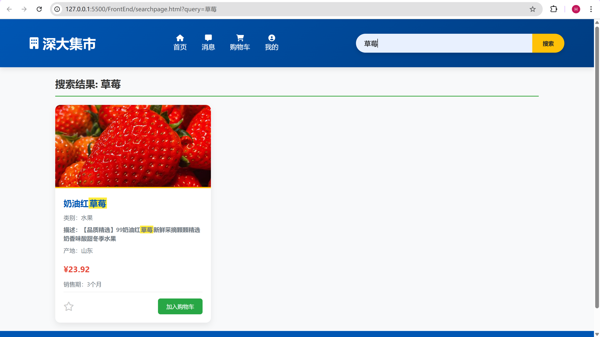
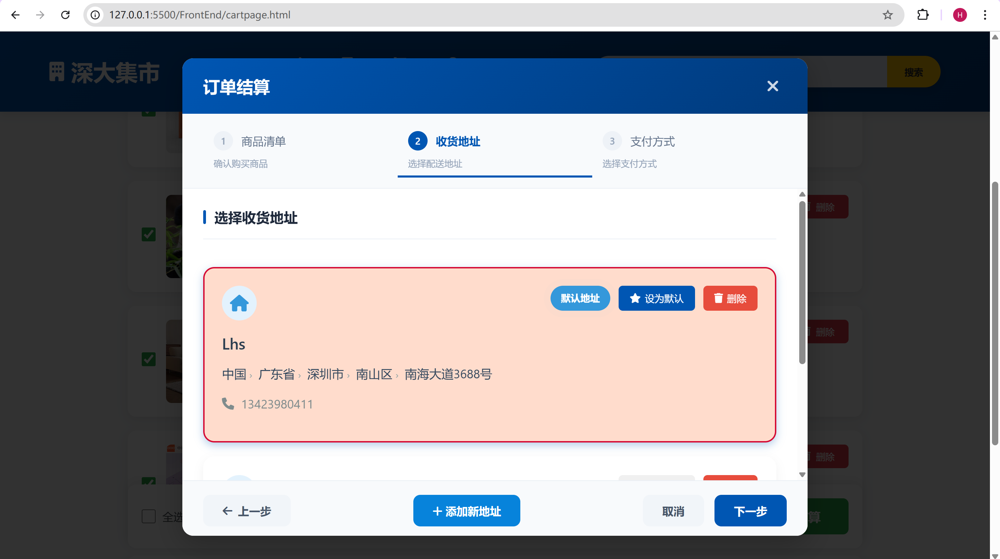
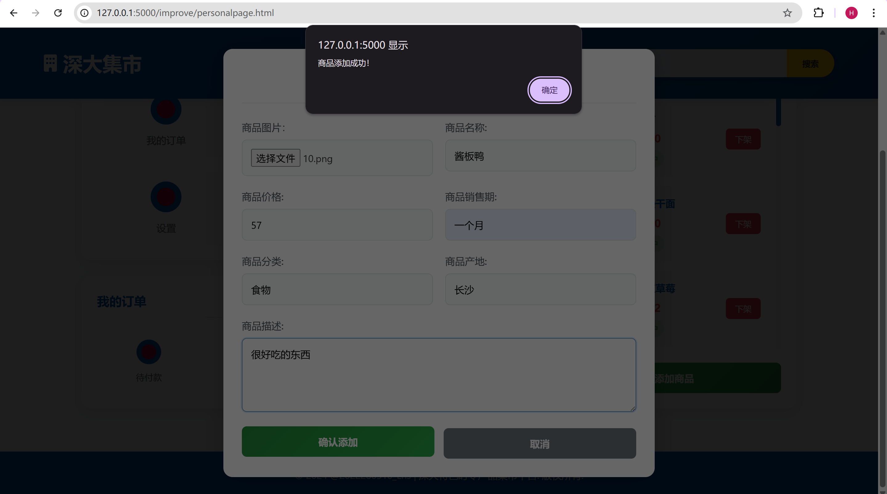

项目简介
独立设计并开发的一个面向深圳大学校园的 B2C 时令农产品在线交易平台，采用前后端分离架构，完整实现商品展示、在线交易、用户管理、后台审核等核心电商功能，为校内师生提供便捷、安全的农特产交易服务。
项目时间
技术栈与实现细节
- 使用原生 HTML5 + CSS3 + JavaScript (ES6+) 构建交互界面；
- 支持商品浏览、关键词搜索、筛选排序、购物车管理、订单流程等功能；
- 注重页面性能优化与用户体验设计（如延迟加载、模块化 UI 组件）。
- 核心框架：基于 Go 标准库 net/http 自主实现 RESTful API，深入掌握 HTTP 协议与 Web 服务底层原理；
- 数据库：使用 MySQL，设计关系型数据表结构；通过 go-sql-driver/mysql 驱动高效进行数据访问。
- 用户系统：
- 实现注册、登录、会话管理；
- 使用基于 Cookie 的 Session 机制保持登录状态，保障访问安全。
- 权限控制（RBAC）：
- 构建基于角色的访问控制系统；
- 支持“普通用户”与“管理员”两级权限，精准控制商品审核、发布权限。
- 商品管理：
- 用户可上传商品、编辑信息、上下架操作；
- 管理员可对商品进行审核、删除、违规处理。
- 交易流程：
- 完整实现商品收藏、加入购物车、下单、订单状态变更等业务流程；
- API 安全与健壮性设计：
- 所有接口均包含参数验证、错误处理；
- 避免 SQL 注入、空字段提交、异常行为导致服务崩溃。
- 模块化分层架构（MVC 模式）：
- 控制器层（路由与 HTTP 接口）
- 服务层（业务逻辑）
- 数据访问层（DAO）
- RESTful 接口规范：
- 路径语义清晰，如 /api/products、/api/orders/:id
- 便于前后端协作开发与调试
前端（自主开发响应式 UI）：
后端（使用 Go 原生构建高性能服务）：
关键模块设计：
系统架构设计：
功能截图：
- 登录/注册界面采用深色背景与动态粒子飘落效果，营造简洁沉浸的视觉氛围。右上角设置用户角色选择模块，支持普通用户与管理员身份切换，便于在统一入口下进行权限分流与功能管理。
- 首页采用卡片式网格布局设计，每行展示三件商品，整体排版简洁有序。每个商品卡片包含图片、名称、类别等基础信息，并通过前后端联动实现动态数据加载：前端通过GET请求从后端接口获取商品数据，实时渲染至页面，确保商品信息更新及时、页面响应流畅。
- 购物车页面采用分层式垂直排布设计，每行展示一件商品，包括商品图片、名称、单价等关键信息。用户可在商品卡片右侧通过按钮动态调整商品数量，或一键移除商品。页面底部实时汇总并展示订单总价，整体界面简洁明了，操作直观，方便用户快速管理购物清单。
数量调整操作具有即时响应特性，页面在不刷新情况下自动更新总价与商品状态。所有前端操作通过PATCH与DELETE请求与后端联动，确保购物车状态与服务器数据一致，提升系统数据一致性与交互流畅性。

- 支付页面采用弹窗式订单确认设计，简洁明了地展示订单总金额，并提供“取消订单”与“确认支付”两种操作按钮。用户点击任一操作后，页面将通过后端接口完成相应逻辑处理，确保交易流程的完整性与数据一致性。
所有操作均通过前后端交互实现：点击“取消订单”将向后端发送撤销请求，释放商品库存并更新订单状态；点击“支付订单”将提交支付请求，变更订单为已支付状态，后续可进一步跳转至支付成功页面或显示支付结果提示。

- 个人页面采用左右分栏的卡片式布局，左侧展示用户基本信息及若干功能入口，部分功能尚在迭代中。右侧区域用于展示当前用户所上架的商品列表，内容通过前端异步请求后端接口动态加载，确保信息实时更新。 
- 商品上架页面采用弹窗形式呈现，用户可在弹窗中填写商品相关信息，包括图片上传、商品名称、价格、类别等字段。所有输入项均支持实时编辑与格式校验，确保数据完整性与有效性。
用户提交后，前端将通过POST请求将表单数据发送至后端API，后端服务接收并处理数据，并将新商品信息存入MySQL数据库。提交成功后，前端可同步刷新商品展示区域，确保数据一致性与用户操作反馈。


项目亮点：
- 全栈自主开发：前后端功能独立实现，完整掌握产品从 0 到 1 的全周期。
- 架构清晰：模块分离、职责明确，具备良好的扩展性与维护性。
- 面向真实需求：以校园用户为目标，结合实际场景设计功能。
- 安全可靠：接口健壮性强，权限控制合理，有一定的抗攻击设计。